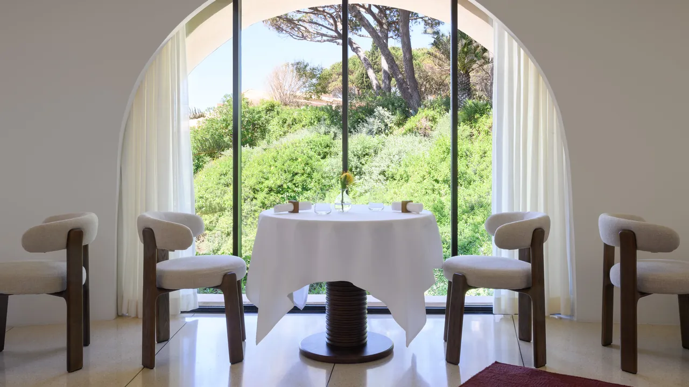
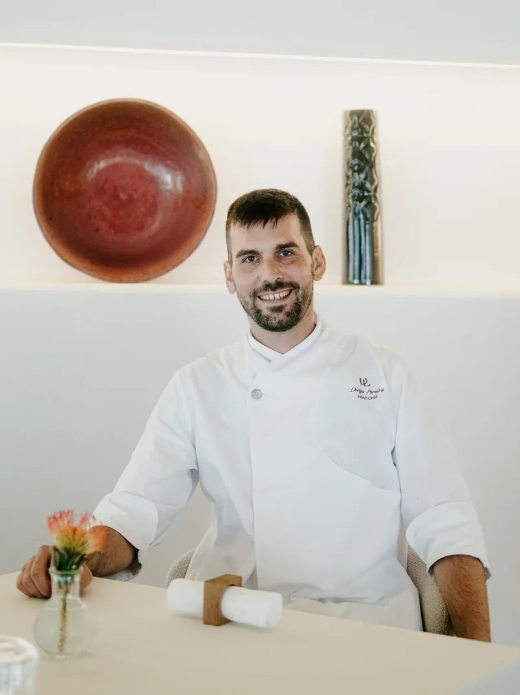
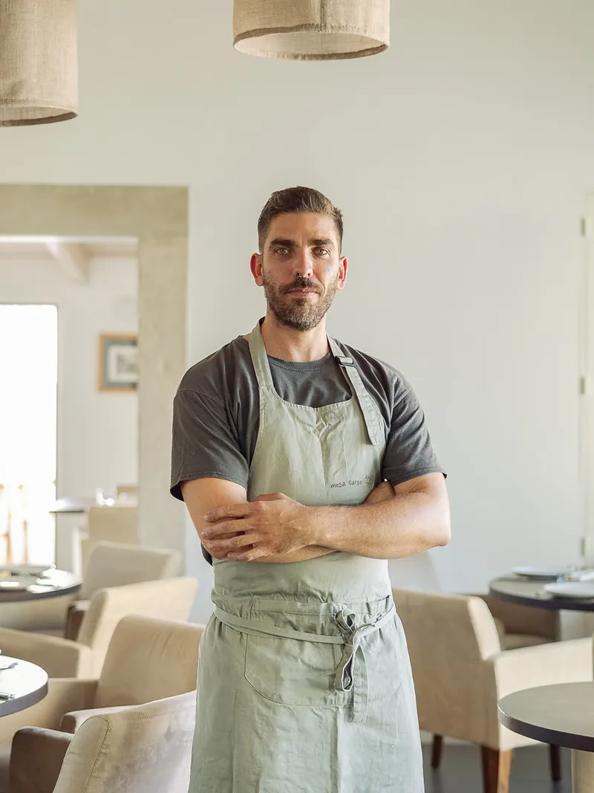

Coral - 4 Setembro
Atlântico
O mar chega antes do vinho. No Coral, João Viegas cozinha a quatro mãos com Diogo Pereira, o convidado e o chef da casa no mesmo passe. Marisco aberto na hora, arroz que não se apressa, sal e acidez em equilíbrio. Uma mesa guiada pelo que a maré deixou nessa manhã.
Chefs

Diogo Pereira
No Vilalara todos os dias do ano, Diogo Pereira traz o Atlântico à mesa. A sua cozinha celebra o Algarve pelo melhor produto, pela estação do ano e por uma ligação profunda ao mar, uma filosofia reconhecida pelo Guia MICHELIN Portugal 2026.

João Viegas
Por uma noite, João Viegas traz ao Vilalara a sua leitura do Algarve. Com um percurso construído lá fora e uma recomendação do Guia MICHELIN Portugal 2026, a sua cozinha junta produto local, técnica contemporânea e um sentido profundo do lugar.
Fusão de sabores
No Coral Éden do Mar é o Atlântico que faz a ementa, e a contenção faz o resto. Uma só noite, a 4 de setembro.
Voltar aos eventos